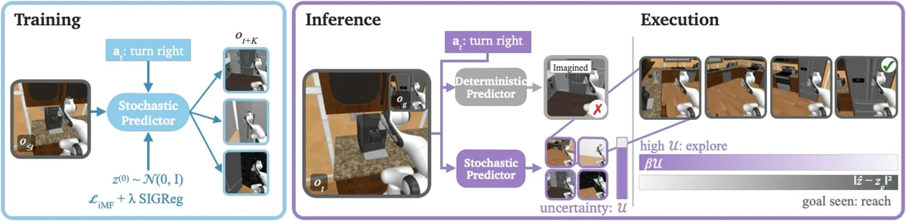

Bowen Feng
I am a Ph.D. candidate in Mechanical and Aerospace Engineering at Princeton University, advised by Felix Heide in the Princeton Computational Imaging Lab. I also work with Naomi Ehrich Leonard in the Leonard Lab.
Before Princeton, I received an M.S. in Robotics from Northwestern University, where I worked with Todd Murphey and Matthew Elwin, and a B.S. in Mechanical Engineering with a minor in Mathematics from Rose-Hulman Institute of Technology.

Research
I work on robot learning: building robots that reason, learn, and act. I study vision-language models whose reasoning is distilled directly into actions, and latent world models that plan and explore under partial observability, with applications in language-steerable navigation, autonomous driving, and multi-agent interaction.
News
- 2026ASD accepted to CoRL 2026.
- 2026EpicWorldModel accepted to NeurIPS 2026.
- VERDI released on arXiv.
Selected Publications
-
 Training Generalist Navigation Policies via Action Self-Distillation Conference on Robot Learning (CoRL), 2026 project page
Training Generalist Navigation Policies via Action Self-Distillation Conference on Robot Learning (CoRL), 2026 project pageA VLM teaches itself language-conditioned navigation reasoning, with no human-annotated language or reasoning labels.
†Equal contribution, ‡joint supervision
-

EpicWorldModel: Exploration-driven Planning with Latent World Models Advances in Neural Information Processing Systems (NeurIPS), 2026A stochastic JEPA world model whose flow predictive variance guides exploration when the goal is out of sight.
*Equal contribution
-
 VERDI: VLM-Embedded Reasoning for Autonomous Driving arXiv, 2025 project page / arXiv
VERDI: VLM-Embedded Reasoning for Autonomous Driving arXiv, 2025 project page / arXivDistills the reasoning process and commonsense knowledge of a VLM into a modular end-to-end driving stack at training time, keeping real-time inference.